Savoy, Texas
c. 1867
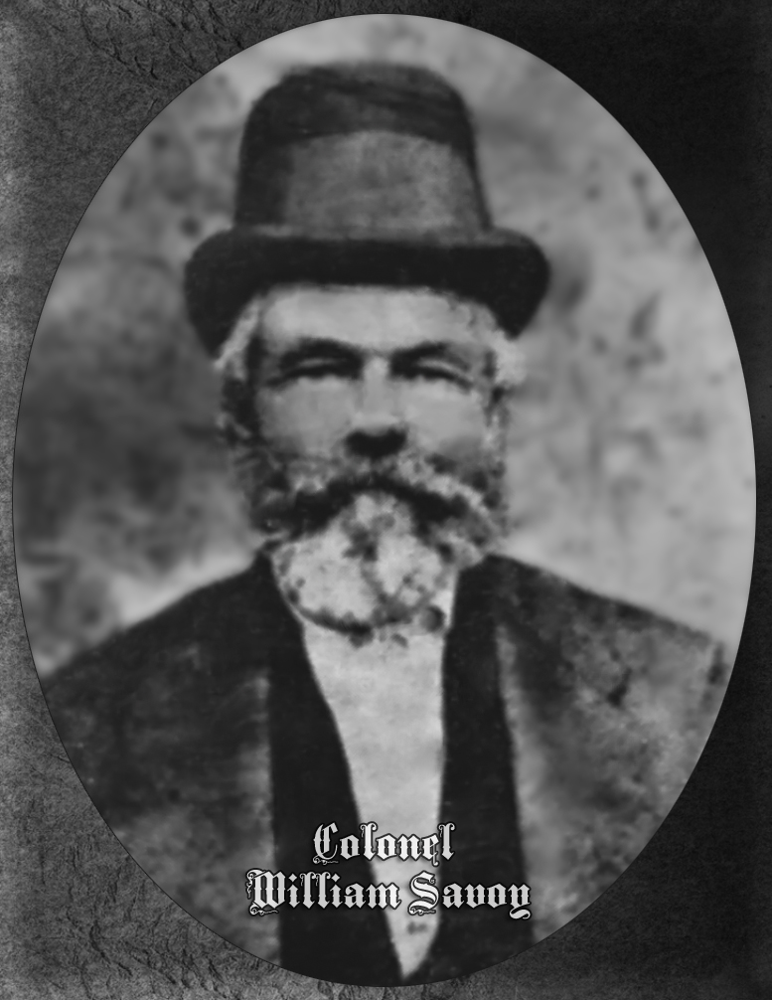
Col. William Savoy and his family — including his son George Washington Savoy and son Marshal Savoy — settle in what would become Fannin County's Savoy community. The town takes their name. Col. Savoy's portrait and an engraving of him survive in the historical record, testifying to his prominence as a founding figure.
c. 1875
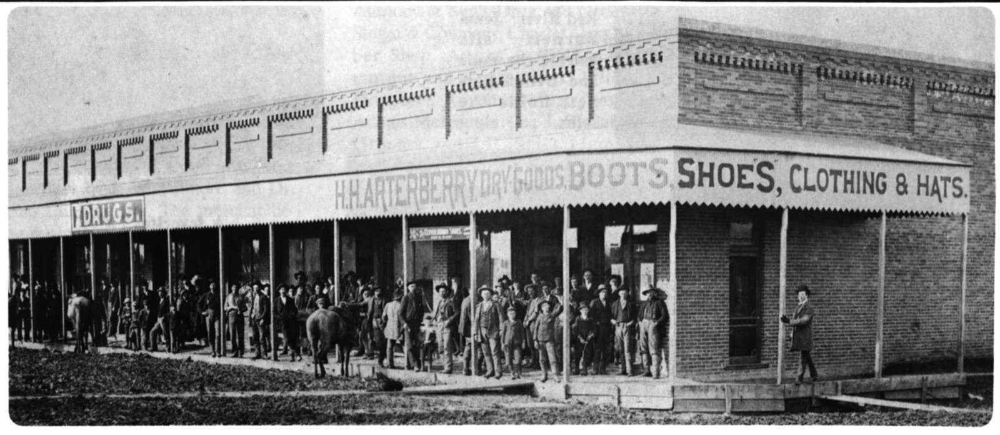
Early businesses establish themselves in Savoy. H.H. Arterberry opens his dry goods store — one of the earliest commercial enterprises in the community — and Arterberry & Son becomes a fixture of frontier-era commerce. Other merchant families follow, building the economic foundation of the young town.
1876
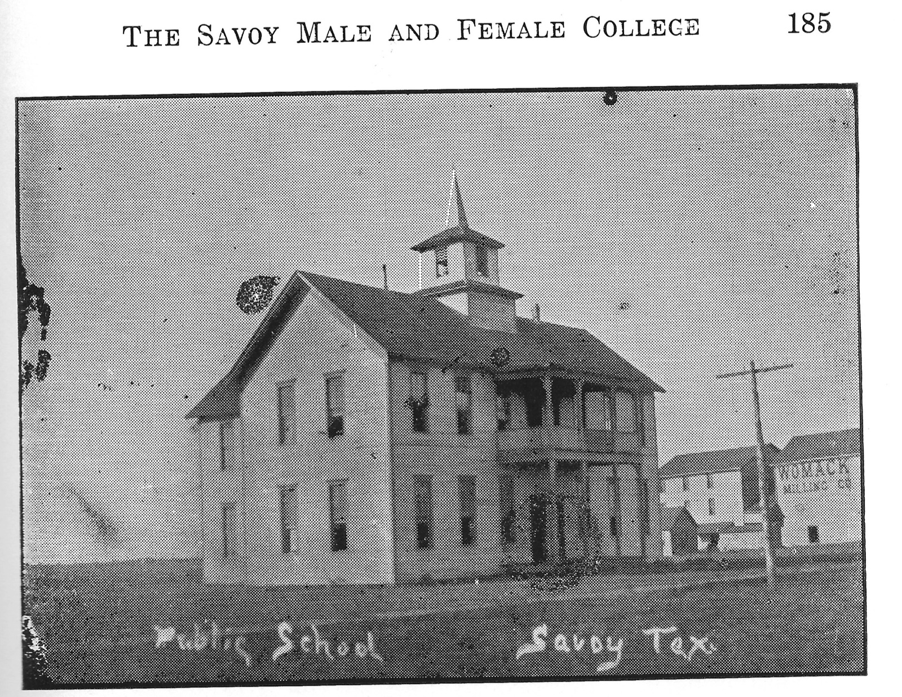
R.R. Halsell establishes the Savoy Male and Female College — an ambitious institution of higher learning for North Texas. The college draws students from across the region and features both a faculty and organized extracurricular activities. At its peak, the school's philosophy class, alumni, and faculty photographs show a thriving academic community. The college operates until approximately 1890, leaving a lasting legacy honored decades later by the naming of the Halsell Gymnasium.
1876
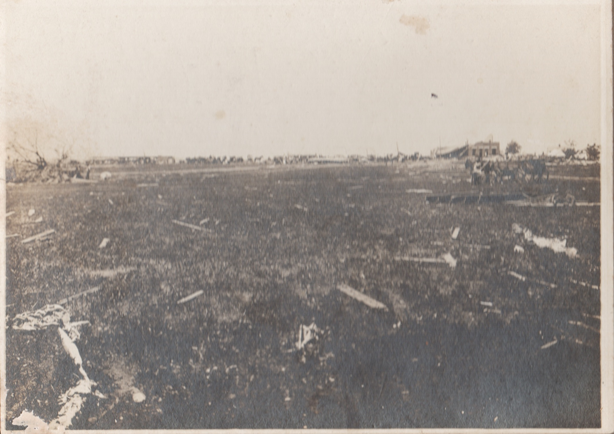
Census forms document the community's growing population. Prominent families — the Halsells and the Hollands — are recorded among early residents. The same year, a Savoy Bible provides one of the earliest documentary traces of church life in the community.
1880
At about 10:10 p.m. on Friday, May 28, 1880 (the Methodist church register says May 29), a tornado roughly 178 yards wide tears through Savoy — demolishing about 40 houses and every business but one, killing nine and wounding 50 to 60. The seminary becomes a hospital, and relief trains bring doctors from Bonham, Dodd City, Bells, Sherman, and Denison. Newspapers from across Texas and the nation cover the disaster — including the Brenham Weekly Banner (June 4 and June 17, 1880), the Daily Dispatch from Austin, and the Kansas Holton Recorder-Tribune. Photographs of the aftermath survive. Remarkably, the community rebuilds.
1880
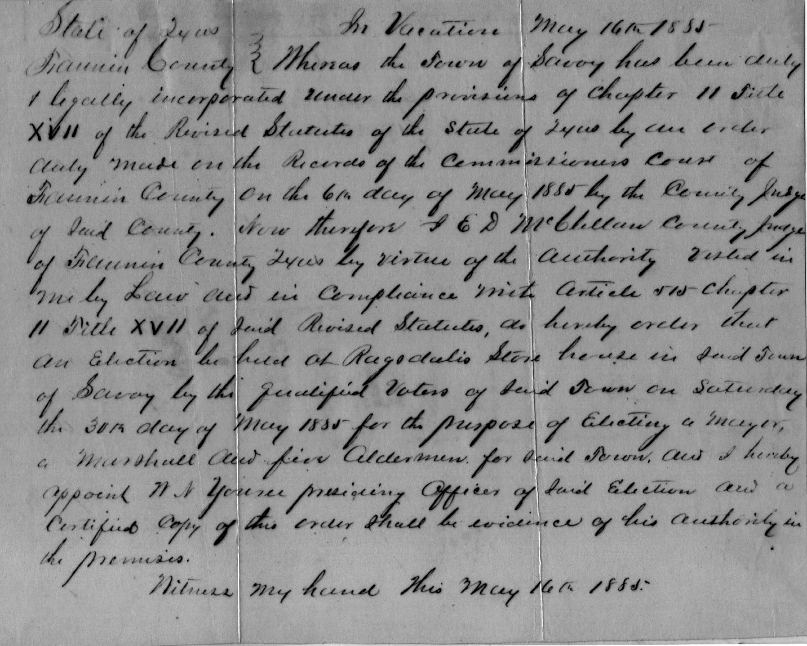
The 1880 Federal Census captures Savoy's population at a pivotal moment — just after the cyclone and in the midst of the college's most active years. The census form for Savoy's precinct is preserved in the archive.
1885
Savoy receives its formal town charter, bringing official civic governance to the community. The first town election is held, establishing the framework of local government. Both the charter document and the election records survive in the archive.
1890
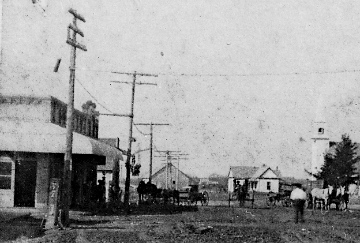
The Savoy Male and Female College — by then one of the leading colleges in the area — is destroyed by fire on July 3, 1890, after roughly fourteen years of operation. Attempts to revive it fail. Its alumni association continues to hold reunions for decades (beginning in 1937), a testament to the school's enduring community bonds; the reunion later gathered at the Halsell Memorial Gymnasium named for founder R. R. Halsell.
1895
A formal church register is created, documenting the spiritual life of the Savoy community. Church records from this period, including baptism registers, form part of the archive's documentary collection.
1900–1910s
Savoy enters the twentieth century as a lively small town. The Savoy Star newspaper chronicles community events. The town maintains a bank (Savoy Bank currency survives in the archive), a dry goods store, and a thriving main street. Photographs from 1900–1910 capture street scenes, storefronts, and the residents of this era. The elementary and high schools are photographed in 1916.
1930
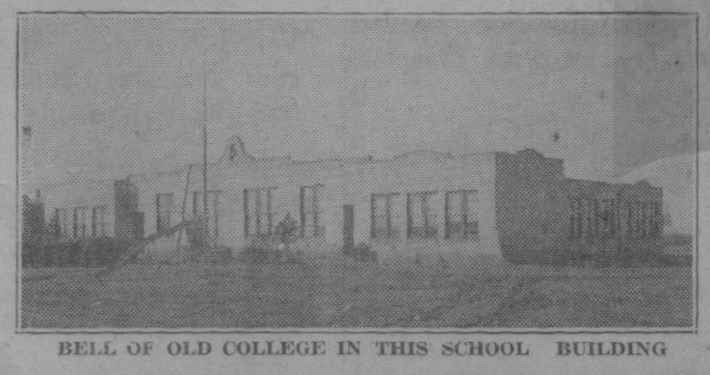
Photographs from 1930 capture Savoy during the Great Depression years. The Savoy Star continues publishing. A cyclone poem published in 1930 recalls the memory of the 1880 disaster. Newspaper articles profile community members, including the Halsell and McSpadden families.
1932
A new school building is constructed, photographed the same year. The community invests in modern educational facilities despite the hardships of the Depression.
1937–1938
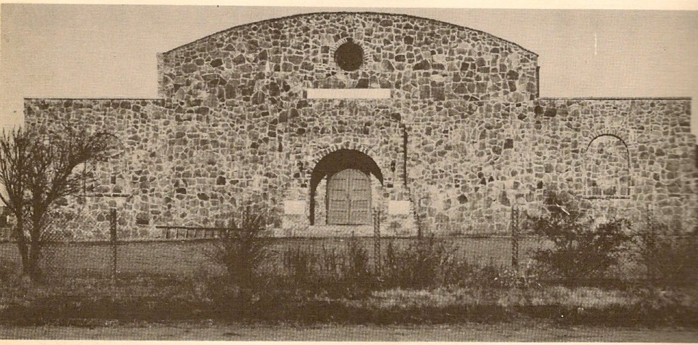
Savoy completes a comprehensive school campus: the Administration Building (1937, photographed again in 1938), the Primary Building, the Ad Shop, and the Halsell Gymnasium — named in honor of R.R. Halsell's legacy as the founder of Savoy's first college sixty years earlier.
1950–1953
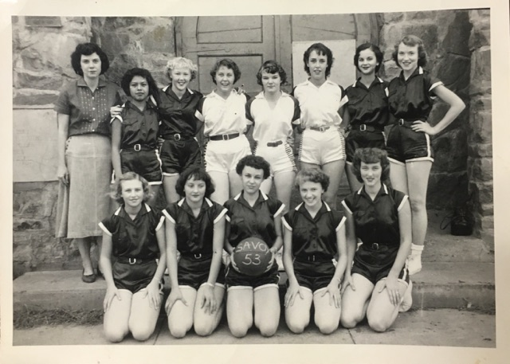
An aerial photograph from around 1940–1954 shows Savoy's street grid from above. The Humble Gas Station, Miller Service Station, the Church of Christ, and the Methodist Church are all photographed around 1950. The 1951 Agricultural Boys photograph and the 1953 Lady Basketball team portrait capture school spirit in the post-war years. College reunions continue to draw former students back to Savoy.
1954
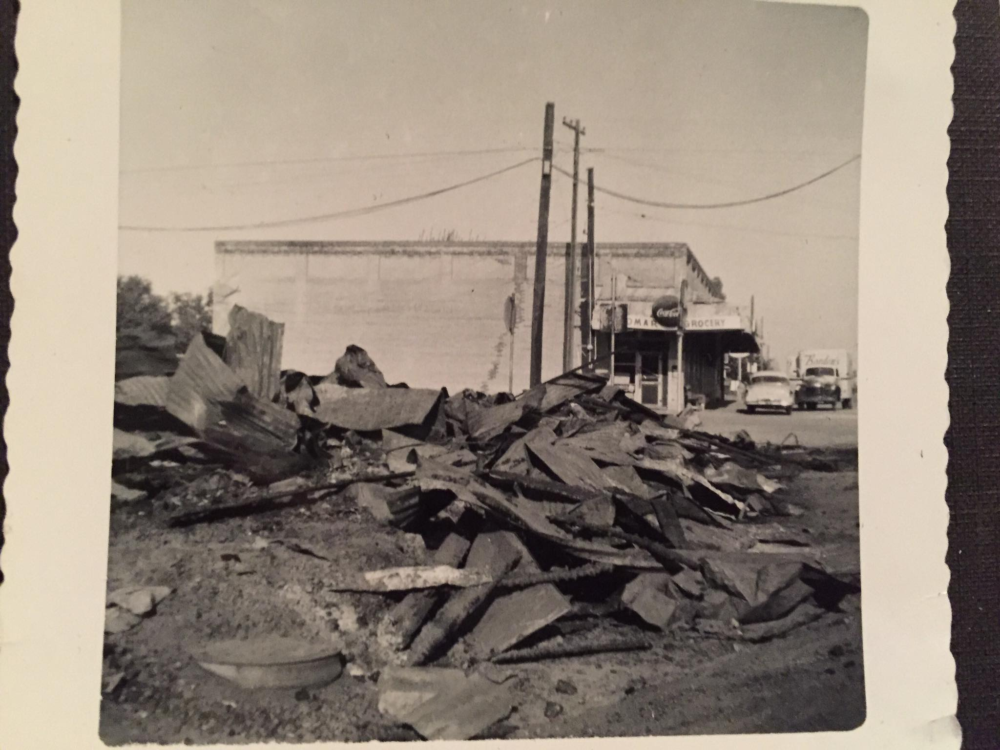
A devastating fire sweeps through downtown Savoy, destroying multiple buildings including the Church of Christ. Mayor S.A. Bibby presides over the community's response. Newspaper articles document the disaster extensively — nine separate clippings survive in the archive — along with photographs of the burning buildings and the aftermath. The 1956 City Hall and Fire Station photograph captures the town's rebuilding spirit.
1966–1967
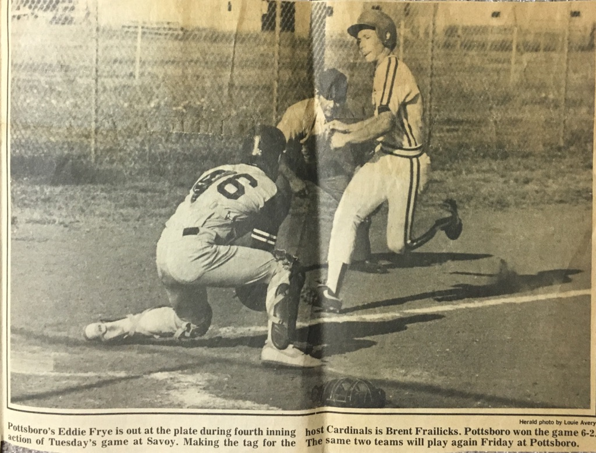
A 1966 photo series documents the Savoy Independent School District — faculty, students, the School Board, and Superintendent Robert Hodges. The Savoy school's role as a community anchor is evident. In 1967, the Water Tower is photographed. A 1964 article covers a "Gold Rush" in the area.
1969
Thirteen photographs document the Acme Colorart Printing Company, a local business that operated in Savoy during this period — capturing equipment, employees, and daily operations.
1976–1979
A 1976 newspaper article highlights Savoy's antiques trade. In 1977, Fannin County Folk and Fact devotes pages to Savoy's cyclone history and the college story. The 1978 basketball team and a medical clinic article appear in local papers. A 1979 bus wreck generates regional coverage.
1982–1988
A rich collection of photographs from 1982 captures the town at that moment. The 1987 Savoy Baseball team is photographed. A 1987 newspaper article covers a new water system, and a 1988 article features a Super Sack factory. The decade is also documented in a large series of 90s-era photographs spanning the late 1980s and early 1990s.
1993
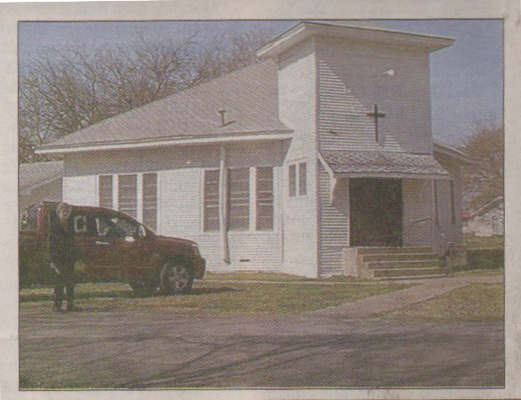
A 1993 newspaper article revisits the memory of the great cyclone of 1880 — more than a century after the original disaster — attesting to the lasting impression that event left on community memory.
2004–2005
A Savoy Family Plaque is dedicated in 2004, commemorating the founding family's legacy. In 2005, a historic church sanctuary is documented along with its bell — an act of preservation that connects the present community to its roots. A fire truck wreck in 2005 also makes regional news. Church restoration photographs from this era show active stewardship of Savoy's historic buildings.
2007
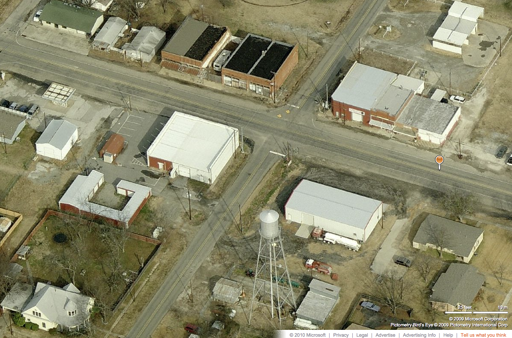
A 2007 newspaper article profiles Eula Phillips, one of the community's storied figures. Bird's eye view photographs of Savoy from the 2000s–2010s capture the town's current layout, providing a final frame in a century-and-a-half of photographic history.